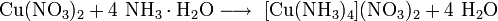

"Безводный нитрат меди(II) при нормальных условиях — твердое кристаллическое вещество белого цвета, хорошо растворимое в воде
При кристаллизации из водных растворов образует ряд кристаллогидратов: нона-, гекса- и тригидраты. Также известны кристаллогидраты, содержащие 1,5 и 2,5 молекулы H2O. Параметры кристаллической решетки кристаллогидратов
Cu(NO3)2·6H2O: триклинная сингония, пространственная группа P1, а = 0,591 нм, b = 0,777 нм, с = 0,543 нм, ? = 97,65°, ? = 93,88°, ? = 72,53°, Z = 1.
Cu(NO3)2·3H2O: ромбическая сингония, пространственная группа Pmn21, а = 1,12 нм, b = 0,505 нм, с = 0,528 нм, Z = 4.
Cu(NO3)2·2,5H2O: моноклинная сингония, пространственная группа I2/a, а = 1,64539 нм, b = 0,49384 нм, с = 1,59632 нм, ? = 93,764°, Z = 8.
Cu(NO3)2·1,5H2O: моноклинная сингония, пространственная группа C2/c, а = 2,22 нм, b = 0,490 нм, с = 1,54 нм, ? = 48°, Z = 8.
Гексагидрат разлагается при нагревании до 100 °C в вакууме. Тригидрат разлагается при 120 °C."
А так в принципе можно залить твой нитрат аммиаком

это уже по интереснее штука получится


 Быстрый ответ
Быстрый ответ